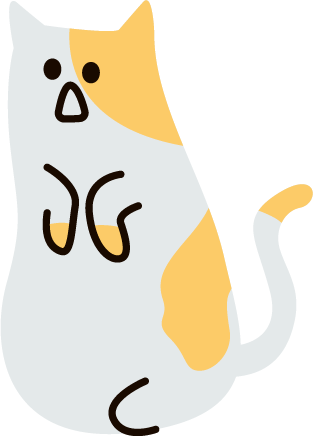

<!DOCTYPE html>
<html lang="en">
  <head>
    <meta charset="UTF-8" />
    <meta name="viewport" content="width=device-width, initial-scale=1.0" />
    <title>걸어가는 고양이</title>
    <style>
      .cat {
        width: 600px;
        height: 200px;
        background-image: url(./images/1.png);
        background-repeat: no-repeat;
        background-size: auto 100%;
        background-position: left top;

        animation-name: move-cat;
        animation-duration: 3s;
        animation-timing-function: steps(6);

        animation-iteration-count: infinite;
        animation-direction: alternate;
        transition: all 0.5s;

      }

      @keyframes move-cat {
        0% {
          transform: translatex(0)
          background-image: url(./images/3.png);
        }

        20% {
          transform: translatex(50px)
          background-image: url(./images/2.png);
        }

        40% {
          transform: translatex(100px)
          background-image: url(./images/1.png);
        }
        60% {
          transform: translatex(150px)
          background-image: url(./images/2.png);
        }

        80% {
          transform: translatex(200px)
          background-image: url(./images/2.png);
        }

        100% {
          transform: translatex(200px)
          background-image: url(./images/2.png);
          background-position: right bottom;

        }
      }
    </style>
  </head>
  <body>
    <div class="container">
      <div class="cat">
        <!--  -->
      </div>
    </div>
  </body>
</html>
